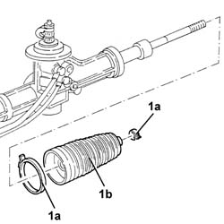

4130A20 L/H OR R/H POWER STEERING CASE BOOT (ONE) - REPLACE AT BENCH
- Path
- Procedures > 41 STEERING UNIT > 4130 POWER STEERING > 4130A POWER STEERING BOX > 4130A20 L/H OR R/H POWER STEERING CASE BOOT (ONE) - REPLACE AT BENCH
- Kind
- repair procedure (removal / refitting; the operation number is the code)
- Applies to
- all engines; all production periods
- Interactive page
- https://sloeber94.github.io/elrnDB-aGt/en/#/125001406
Applies to: all engines; all production periods
 Removing
Removing
 Refitting
RefittingProceed with removal
Op. 4110B14 STEERING LINKS - R+R WITH STEERING BOX REMOVED
1. Loosen the clips (1a) and withdraw the power steering box gaiter (1b).

Applies to: all engines; all production periods
Refitting
RemovingFit new boot for the power assisted steering box and secure it using new bands.
Proceed with refitting